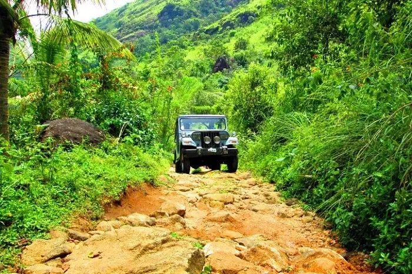
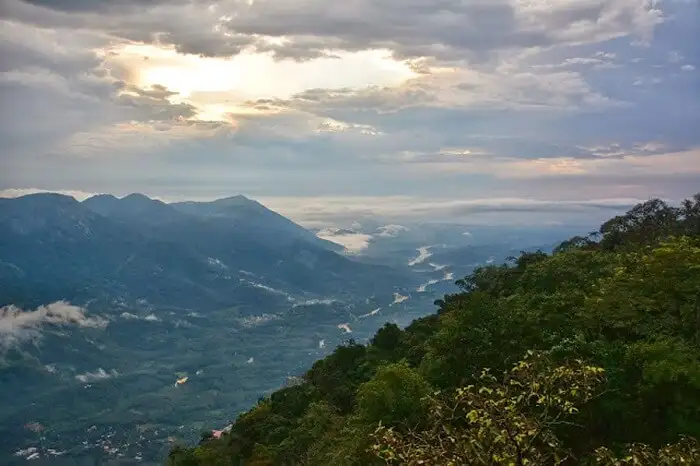

Kottayam district in Kerala is bordered by the lofty and mighty Western Ghats on the east and the Vembanad Lake and paddy fields of Kuttanad on the west. Not familiar to many, Kottayam possesses a variety of tourist resources and geographical diversity within a small area of about 2208 sq. km. Its panoramic backwater stretches, lush paddy fields, highlands, hills and hillocks, extensive rubber plantations, places associated with many legends and a totally literate people have given Kottayam District the enviable title: 'The Land of Letters, Legends, Latex and Lakes'. Kottayam is also called as Aksharanagari (the citadel of letters) considering its contribution to print media and literature.
The district is divided into high-land, midland and lowland, the bulk being constituted by the midland regions. Meenachil and Kanjirappally taluks have high land and midland areas while Kottayam, Changanassery and Vaikom Taluks have midland and lowland areas. Positioned a little south to central Kerala, Kottayam district is bordered on the north by Ernakulam district, on the east by Idukki district and on the south by Alappuzha district - the most popular destinations in Kerala. The Vembanad Lake forms the western boundary.
The city is also an important trading center of spices and commercial crops, especially rubber. Most of India's natural rubber originates from the acres of well-kept plantations of Kottayam, which in itself is a sight to behold.
All these unique features differentiate Kottayam from most other parts of Kerala, and it also stands out in terms of distinct culture and educational background.
Places To Visit In Kottyam
Vaikom
vaikom is one of the popular places around Kottayam mainly due to its variety of tourist attractions. It is home to some of the most scenic backwaters of Kerala like Kumarakom and houses rich historical places and heritage temples that add an old-world charm to it. Its serenity and simplistic beauty are unbeatable. If you are looking for some ‘me or us’ time, Kottayam is littered with several secluded, yet calming haunts where you can let sit back and simply enjoy the view.
Elaveezha Poonchira

Surrounded by three hills – Mankunnu, Kodayathoormala and Thonippara – Elaveezha Poonchira is a must-see tourist place in Kottayam. Known for its magnificent views and lush greenery, Elaveezha Poonchira is dotted with exquisite waterfalls and secret alcoves. It is famous among trekkers for its terrain and is the perfect picnic spot, hardly an hour away from the main Kottayam town.
Nadukani

Nadukani is one of the popular hill stations near Kottayam and is a major picnic spot. Nadukani offers wonderful views of the landscapes covered in dense forests, Nilgiri mountains, Muvattupuzha river, mystical valleys, and colourful flora. One of the popular tourist places near Kottayam, Nadukani has emerged as the new go-to spot for youngsters and couples looking for refuge. Take buses or private taxis to reach Nadukani from Kottayam. In the end, the trip would be truly worth it.